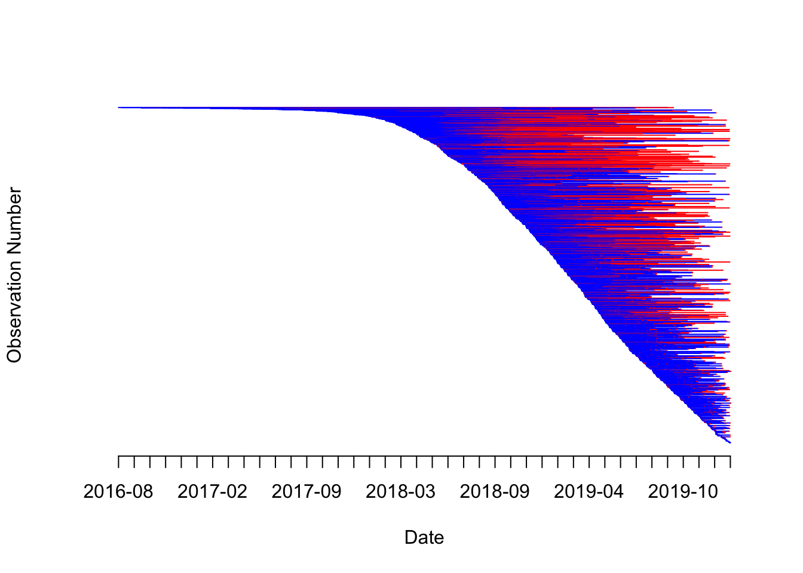
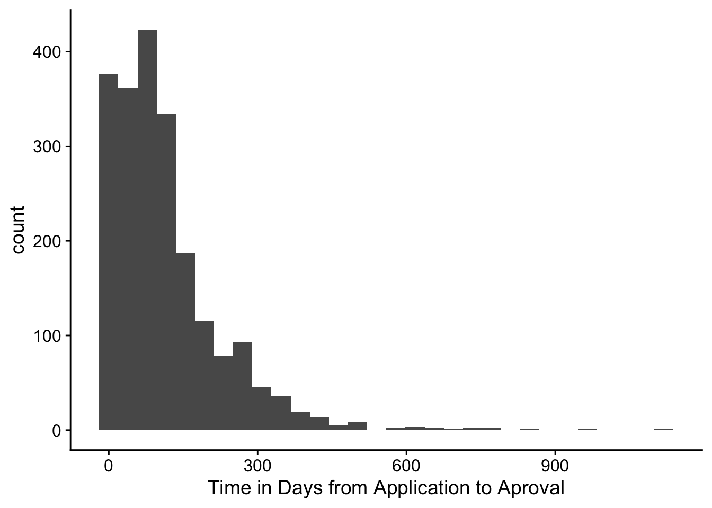
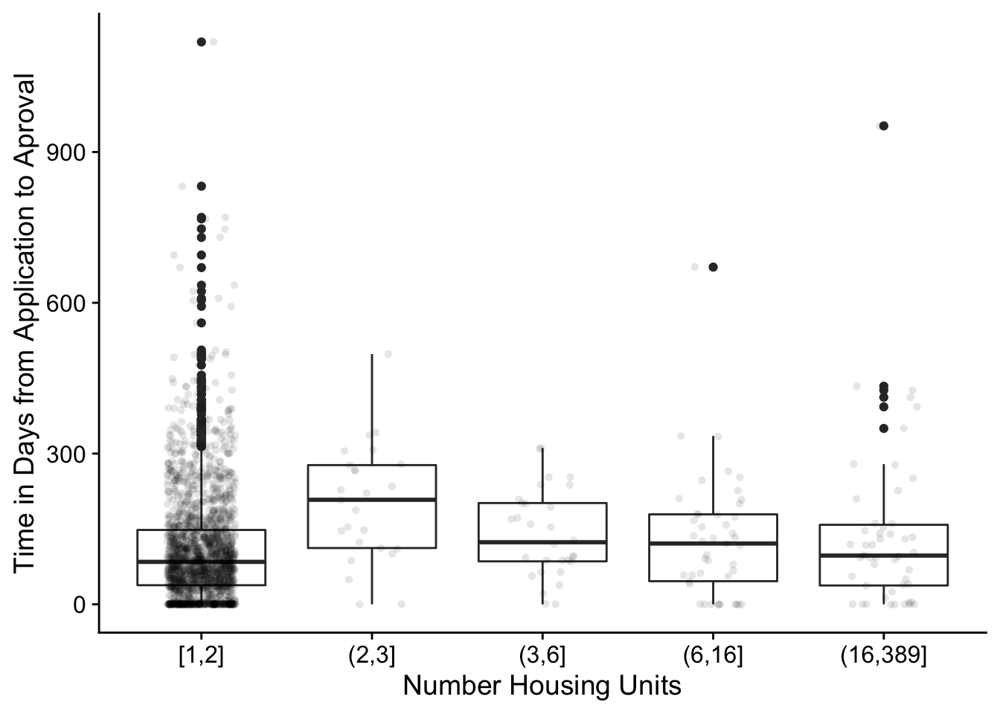
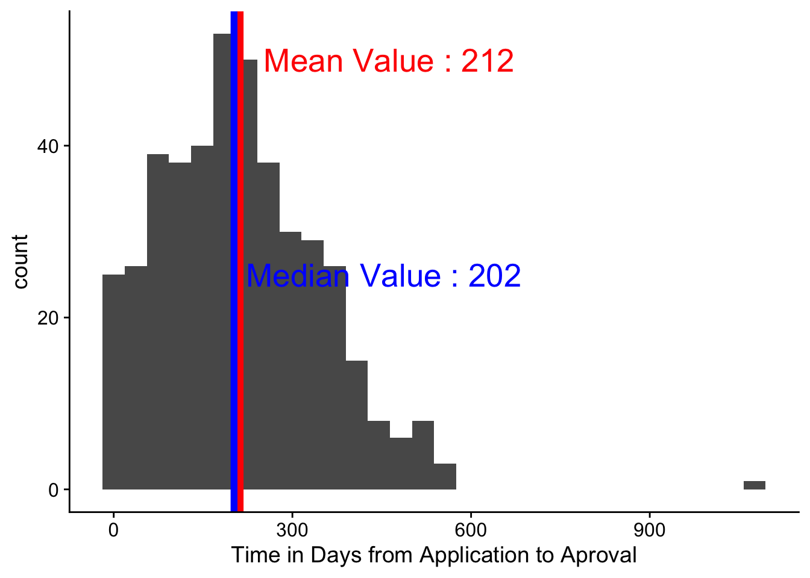
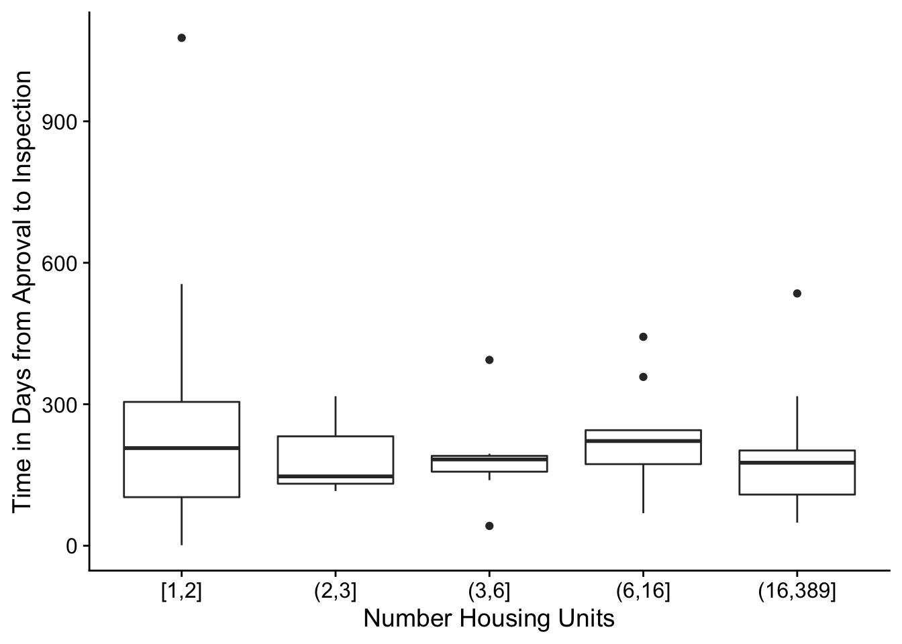

library("wesanderson")
library("tidyverse")
library("DescTools")## Registered S3 method overwritten by 'DescTools':
## method from
## print.palette wesandersonlibrary("ggplot2")
library("cowplot")##
## ********************************************************## Note: As of version 1.0.0, cowplot does not change the## default ggplot2 theme anymore. To recover the previous## behavior, execute:
## theme_set(theme_cowplot())## ********************************************************theme_set(theme_cowplot())
d <- read.csv("expanded_dat.csv", stringsAsFactors = FALSE)
d$ap_date <- as.Date(d$Application.Completed.Date..1,
"%m/%d/%Y")
d$pi_date <- as.Date(d$Permit.Issued.Date..1,
"%m/%d/%Y")
d$ic_date <- as.Date(d$Inspections.Completed.Date..1,
"%m/%d/%Y")
d <- d[order(d$ap_date, decreasing = FALSE), ]
long <- d
d <- d[-(1:10), ]
d <- d[!is.na(d$ap_date), ]
make_some_lines <- function(row, num){
app_done <- as.numeric(row["ap_date"])
perm_prv <- as.numeric(row["pi_date"])
inspec <- as.numeric(row["ic_date"])
if(is.na(perm_prv)){
if(!is.na(app_done)){
lines(x = c(app_done, app_done + 1),
y = rep(num, 2), col = "blue")
}
}else{
if(!is.na(app_done)){
lines(x = c(app_done, perm_prv),
y = rep(num, 2),
col = "blue")
}
}
if(is.na(inspec)){
if(!is.na(perm_prv)){
lines(x = c(perm_prv, perm_prv + 1),
y = rep(num, 2),
col = "red")
}
}else{
if(!is.na(app_done)){
lines(x = c(perm_prv, inspec),
y = rep(num, 2),
col = "red")
}
}
}bounds <- c(d$ap_date[1], max(c(d$pi_date, d$pi_date,
d$ic_date), na.rm = TRUE))
plot(bounds, c(nrow(d), 1), type = "b", col = "white",
bty = "n", ylab = "Observation Number",
"xlab" = "Date", axes = FALSE)
some_dates <- seq(from = bounds[1], to = bounds[2], length.out = 40)
axis(1, at = some_dates, labels = format(some_dates, "%Y-%m"))
for(bb in 1:nrow(d)){
make_some_lines(d[bb, ], nrow(d) - bb)
}
d$d_diff <- difftime(d$pi_date, d$ap_date, units = "day")
d$d_diff_ic <- difftime(d$ic_date, d$pi_date, units = "day")
d$l_tdiff <- pmax(0, log(as.numeric(d$d_diff)))
d$un_grp <- cut(d$HousingUnits,
unique(quantile(d$HousingUnits, seq(0, 1, length.out = 40))),
include.lowest = TRUE)
ggplot(d) + aes(x = d_diff) + geom_histogram(bins = 30) + xlab("Time in Days from Application to Aproval")## Don't know how to automatically pick scale for object of type difftime. Defaulting to continuous.## Warning: Removed 780 rows containing non-finite values (stat_bin).
ggplot(d) + aes(x = un_grp, y = d_diff) + geom_boxplot() + ylab("Time in Days from Application to Aproval") + xlab("Number Housing Units")## Don't know how to automatically pick scale for object of type difftime. Defaulting to continuous.## Warning: Removed 780 rows containing non-finite values (stat_boxplot).
ggplot(d) + aes(x = d_diff_ic) + geom_histogram() + xlab("Time in Days from Aproval to Inspection completion")## Don't know how to automatically pick scale for object of type difftime. Defaulting to continuous.## `stat_bin()` using `bins = 30`. Pick better value with `binwidth`.## Warning: Removed 2457 rows containing non-finite values (stat_bin).
ggplot(d) + aes(x = un_grp, y = d_diff_ic) + geom_boxplot() + ylab("Time in Days from Application to Aproval") + xlab("Number Housing Units")## Don't know how to automatically pick scale for object of type difftime. Defaulting to continuous.## Warning: Removed 2457 rows containing non-finite values (stat_boxplot).